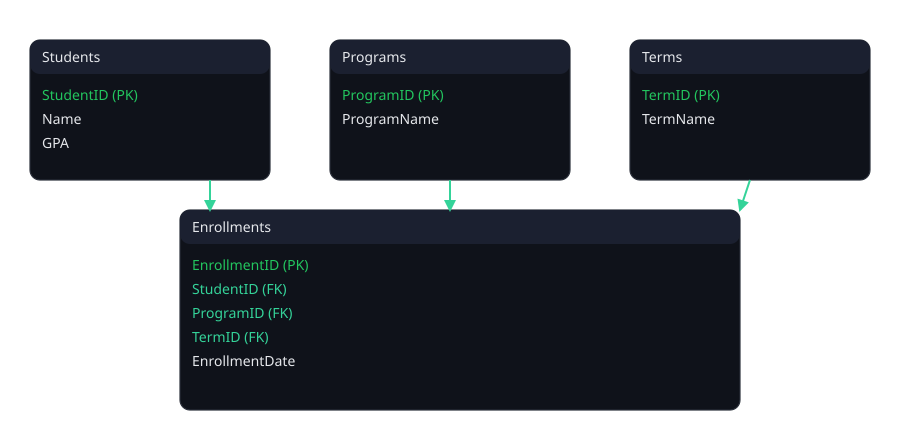

Team
FP
Fabrizio Petrozzi
Data Visualization & Styling
Contributions: built
data.html and the data table (CSV), finalized website styling, authored main.css, and edited the final report.AM
Andrey Martynenko
Front-End & Documentation
Contributions: created
index.html (Home) and the About Us page, and wrote the final report.BR
Bryan Reeder
Data Model & CRUD Engineering
Contributions: designed the ERD and implemented CRUD code (Read, Write, Update, Delete).
HB
Hammaz Buksh
Product & Chatbot
Contributions: led idea generation and project outline, and built the ChatBot.
Logical data model
Core tables with one-to-many relationships.

Shown: Student → Enrollment (one student, many enrollments) and Program → Enrollment (one program, many enrollments); primary and foreign keys are labeled in the diagram.
Repository
Code and documentation live in our GitHub repo.